Granting organization access to business process tasks at the level of user attributes
- 1. Abstract
- 2. Business process modeling and configuration
- 2.1. Створення пулу для бізнес-процесу першої школи
- 2.1.1. Моделювання початкової події
- 2.1.2. Моделювання користувацької задачі внесення даних
- 2.1.3. Моделювання користувацької задачі підпису даних КЕП
- 2.1.4. Моделювання користувацької задачі для пошуку посадової особи
- 2.1.5. Моделювання сервісної задачі для отримання списку користувачів за їх атрибутами
- 2.1.6. Моделювання кінцевої події "Повідомлення"
- 2.2. Створення пулу для бізнес-процесу другої школи
- 2.1. Створення пулу для бізнес-процесу першої школи
- 3. Налаштування доступу в Keycloak
- 4. Імплементація на рівні API
1. Abstract
In order to support the functionality of organization access granting to business processes at the level of user attributes, a standard extension to business processes has been developed — the ${getUsersByAttributesFromKeycloak} delegate. For that, the Get users by attributes from keycloak template with the same name is implemented as a JSON file getUsersByAttributesFromKeycloak.json.
The delegate is required in order to receive a list of users (officers) by certain attributes from the Keycloak identity and access management service when performing a business process.
- you can search in Keycloak using the following attributes:
-
-
edrpou: The identification number of an entity in the Unified state register of enterprises and organizations of Ukraine (EDRPOU). -
drfo: The identification number of a natural person in the State Register of Individuals – Taxpayers (DRFO).
-
Each officer of a certain organization has such attributes in the Keycloak service. As a result of the query, a list of usernames is returned to the business process.
This is NOT the full name of a user, but a username. For example, username1, username2 etc.
|
This list of names can be used later on in the Candidate users field when performing a custom task in a business process.
Candidate users are the users authorized to perform the task. This parameter is required to control user access to specific tasks of a business process.
The list of Keycloak users is saved to the result variable in a service task of a business process. This variable is further processed by the groovy script when executing the scripting task. As a result, the list becomes a string that can be used in Candidate users.
So, we get the list object from the Keycloak service using the edrpou and drfo attributes and use the script to convert it into a string, which values are comma separated and used in the Candidate users parameter for granting access to a specific task of a business process.
|
2. Business process modeling and configuration
Let’s consider setting up a delegate to search for user attributes in the Keycloak service as part of the process when transferring a student from one school to another.
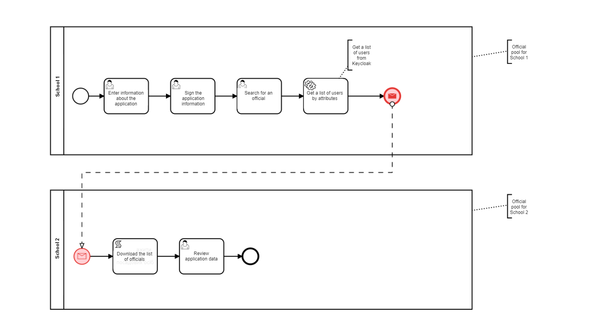
We have a complex business process of transferring a student from one school to another. The student must first be excluded from the first school, and then enrolled at the second.
З погляду архітектури безпеки, у сервісі Keycloak кожна організація (тут — заклад освіти) має свій код ЄДРПОУ. Тому два бізнес-процеси у нашому прикладі є різними організаціями, кожна зі своїми працівниками й відповідним рівнем доступу в межах організації.
Ми маємо автоматично запустити бізнес-процес другої школи після закінчення першого процесу. Кінець бізнес-процесу у першій школі (Школа 1) запускає другий процес (Школа 2) подією "Повідомлення".
У бізнес-процесі другої школи посадова особа має виконати задачу (User Task) із переведення учня, тобто необхідно призначити виконавця задачі у новій організації (школі). Для цього потрібно спочатку отримати список потенційних користувачів відповідної організації (виконавців) із сервісу Keycloak, а потім використати цей список, щоб надати доступ до виконання задачі користувачам у другому бізнес-процесі.
Тобто кожна посадова особа відповідної організації зможе бачити задачу у Кабінеті отримувача послуг і призначити себе виконавцем.
2.1. Створення пулу для бізнес-процесу першої школи
Найперше, змоделюйте пул для бізнес-процесу першої школи. Для цього виконайте кроки, подані нижче:
| Моделювання діаграми бізнес-процесу має відбуватися в рамках елемента Create Pool/Participant. |
-
Відкрийте додаток Camunda Modeler та створіть нову діаграму BPMN. Для цього у лівому верхньому куті натисніть меню File → New File → BPMN Diagram.

-
На панелі інструментів зліва знайдіть елемент Create pool/Participant та перетягніть його до панелі моделювання.

-
Заповніть наступні поля відповідними значеннями:
-
У полі
Participant Nameвведіть назву пулу, що відображатиметься у моделері —Школа 1. -
У полі
Process idвведіть ідентифікатор бізнес-процесу —firstversa. -
У полі
Process Nameвкажіть бізнес-назву процесу за необхідності.
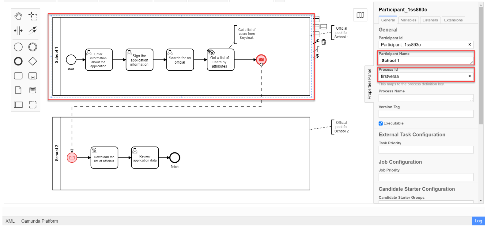
-
2.1.1. Моделювання початкової події
Створіть початкову подію. Для цього виконайте наступні кроки:
-
На панелі інструментів, зліва, знайдіть елемент (коло) CreateStartEvent та перетягніть його до панелі моделювання.
-
На панелі налаштувань справа заповніть наступні параметри відповідними значеннями:
-
У полі
Nameвведіть назву початкової події —Початок; -
У полі
Initiatorвведітьinitiator.initiator— спеціальна змінна, що встановлюється для користувача, який розпочав процес.
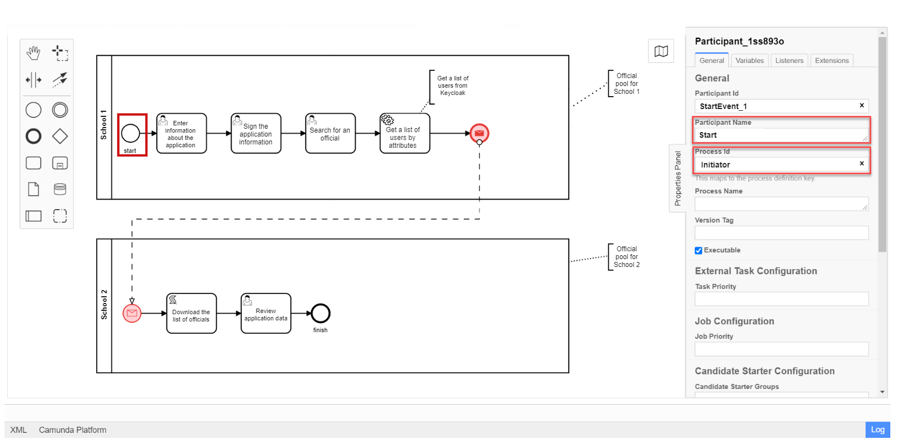
-
2.1.2. Моделювання користувацької задачі внесення даних
Далі створіть користувацьку задачу, призначену для введення даних користувачем. Для цього виконайте наступні кроки:
-
Створіть нову задачу, вкажіть її тип, натиснувши іконку ключа та обравши з меню пункт User Task (Користувацька задача).
-
На панелі налаштувань справа натисніть
Open Catalog, оберіть шаблон User Form (Користувацька форма) та натиснітьApplyдля підтвердження. -
На панелі налаштувань сконфігуруйте наступні параметри:
-
У полі
Idвкажіть ідентифікатор задачі —Zayava.ID задачі призначається автоматично, за замовчуванням. Введіть значення вручну, якщо це необхідно. -
У полі
Nameвкажіть назву задачі —Внести дані про заяву. -
У полі
Form keyвведіть ключ форми, що відповідатиме службовій назві форми для внесення даних —add-keyapp. -
У полі
Assigneeвкажіть змінну, що використовується для зберігання користувача, який запустив екземпляр процесу, —${initiator}.З погляду UI, після запуску бізнес-процесу, перед посадовою особою з’явиться форма для внесення даних про заяву. Дані будуть передані бізнес-процесу за параметром Form keyі використані у наступній задачі процесу.
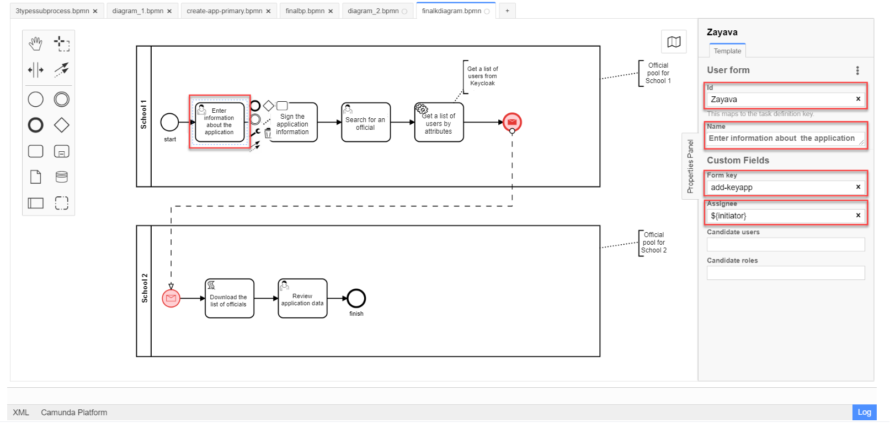
-
2.1.3. Моделювання користувацької задачі підпису даних КЕП
Змоделюйте користувацьку задачу (User form) для підпису даних про заяву за допомогою КЕП та пов’яжіть її з формою бізнес-процесу параметром Form key.
-
У полі
Idвкажіть ідентифікатор задачі —Sign. Він є ключем визначення задачі (task definition key). -
У полі
Nameвведіть назву задачі. Наприклад,Підписати дані про заяву. -
У полі
Form keyвведіть ключ форми бізнес-процесу —add-zayavasign. -
У полі
Assigneeвкажіть змінну, що використовується для зберігання користувача, який запустив екземпляр процесу, —${initiator}.З погляду UI, після внесення даних користувачем, з’явиться нова форма для підпису даних за допомогою КЕП. Дані будуть передані бізнес-процесу за параметром Form keyі використані у наступній задачі процесу.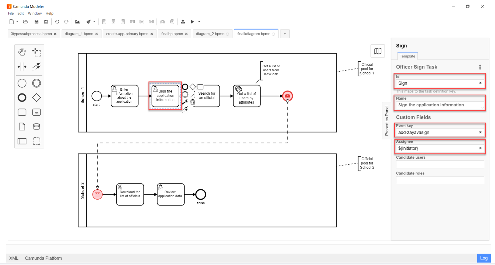
2.1.4. Моделювання користувацької задачі для пошуку посадової особи
Змоделюйте користувацьку задачу (User form) для пошуку посадових осіб або конкретної посадової особи за атрибутами та пов’яжіть її з формою бізнес-процесу параметром Form key.
-
У полі
Idвкажіть ідентифікатор задачі —Search. Він є ключем визначення задачі (task definition key). -
У полі
Nameвведіть назву задачі. Наприклад,Виконати пошук посадової особи. -
У полі
Form keyвведіть ключ форми бізнес-процесу —add-zayavasearch. -
У полі
Assigneeвкажіть змінну, що використовується для зберігання користувача, який запустив екземпляр процесу, —${initiator}.З погляду UI, після підпису даних користувачем, з’явиться нова форма для пошуку посадових осіб/посадової особи за атрибутами. Тобто користувач має ввести значення атрибутів edrpouтаdrfoу відповідних полях форми. Дані будуть передані бізнес-процесу за параметромForm keyі використані у наступній задачі процесу.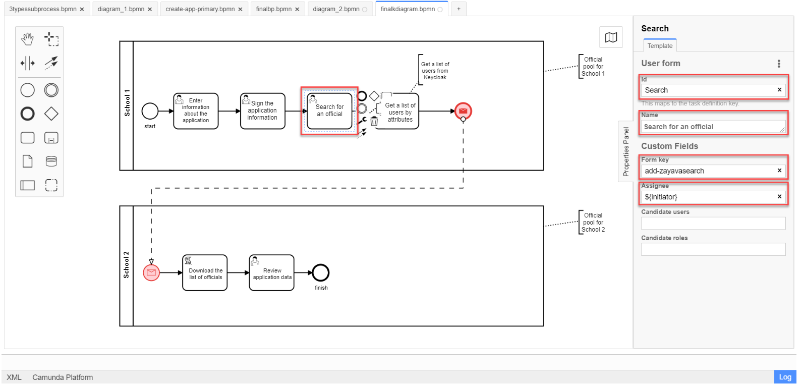
2.1.5. Моделювання сервісної задачі для отримання списку користувачів за їх атрибутами
Надалі дані використовуються у сервісній задачі "Отримати список користувачів за атрибутами".
У задачі необхідно застосувати делегат для отримання списку користувачів за їх атрибутами (Get users by attributes from keycloak).
В результаті отримуємо список користувачів за їх атрибутами.
-
Змоделюйте нову задачу.
-
Визначте її тип, натиснувши іконку ключа та обравши з меню пункт Service Task (сервісна задача).
-
Перейдіть до панелі налаштувань справа та застосуйте делегат Get users by attributes from keycloak. Для цього оберіть відповідний шаблон із каталогу (
Open Catalog). -
Виконайте подальші налаштування:
-
У полі
Nameвкажіть назву задачі. Наприклад,Отримати список користувачів за атрибутами. -
У полі
Edrpou attribute valueвкажіть значення атрибутаedrpou—${submission('Search').formData.prop('edrpou').value()}.Значення атрибута
edrpouє обов’язковим для заповнення. Його можна передати як напряму (тобто ввести код ЄДРПОУ, наприклад,11111111), так і через функціюsubmission(), вказавши ID останньої користувацької задачі (тут —'Search'). -
У полі
Drfo attribute valueвкажіть значення атрибутаdrfo—${submission('Search').formData.prop('drfo').value()}.Значення атрибута
drfoє опціональним. Його можна передати як напряму (тобто ввести код ДРФО, наприклад,2222222222), так і через функціюsubmission(), вказавши ID останньої користувацької задачі (тут —'Search'). -
У полі
Result variableвкажіть назву змінної, до якої необхідно зберегти відповідь —usersByAttributes.В результаті запита отримуємо список користувачів із Keycloak за їх атрибутами, який зберігатиметься у змінній
usersByAttributes.-
Якщо користувач передає лише значення параметра
edrpou, то сервіс повертає список усіх посадових осіб відповідної організації. -
Якщо користувач передає значення параметрів
edrpouтаdrfo, то сервіс повертає список з іменем конкретної посадової особи відповідної організації.
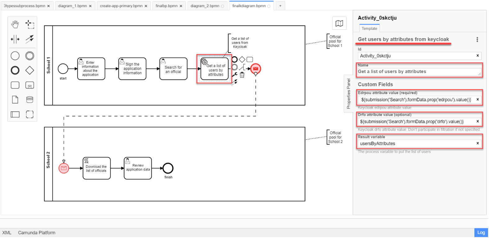
-
-
2.1.6. Моделювання кінцевої події "Повідомлення"
На цьому етапі необхідно передати отриманий список користувачів до іншого бізнес-процесу. Для цього використовується кінцева подія "Повідомлення". Тобто завершення одного процесу запускає інший процес через повідомлення, передаючи певні дані.
Нам необхідно створити локальну змінну і передати в ній список користувачів, а також КЕП до іншого процесу.
-
Змоделюйте кінцеву подію повідомлення.
Детальніше про події "Повідомлення" — за посиланням. -
Перейдіть до панелі налаштувань справа та сконфігуруйте параметри:
-
На вкладці
Generalналаштуйте наступне:-
У полі
Implementationоберіть типDelegate Expression. -
У полі
Delegate Expressionвведіть делегат для передачі повідомлення —${startProcessByMessageDelegate}. -
У полі
Global Message Nameвведіть глобальне ім’я для встановлення зв’язку між подіями повідомлення —Startprocessmessage. -
У полі
Global Message referencedоберітьStartprocessmessage. Значення заповнюється автоматично, відповідно до параметраGlobal Message Name.Значення параметрів Global Message NameтаGlobal Message referencedмають збігатися з відповідними значеннями події, що приймає повідомлення.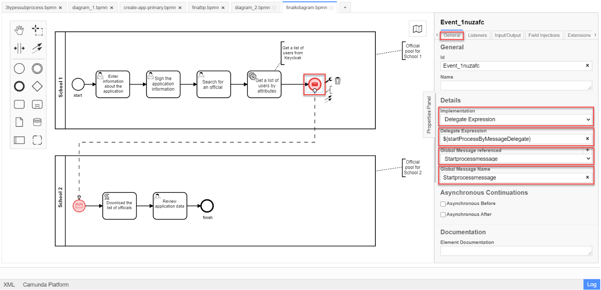
-
-
На вкладці
Input/Outputналаштуйте локальну змінну як вхідний параметр:-
У полі
Local Variable Nameвведіть назву локальної змінної —messagePayload. -
У полі
Variable Assignment Typeвкажіть тип передачі параметрів через змінну —Map(ключ-значення). -
Додайте записи для двох параметрів, натиснувши позначку плюса (
+):-
Для першого запису, у полі
Keyвкажіть параметрusersта його значення${usersByAttributes}.Користувач має передати назву змінної, до якої збережено масив користувачів, отриманий в рамках попередньої сервісної задачі. -
Для другого запису, у полі
Keyвведіть параметрtaskта його значення${submission('Sign').formData}.Користувач має передати через функцію submission()КЕП, застосований в останній користувацькій задачі для підпису даних (тут —'Sign').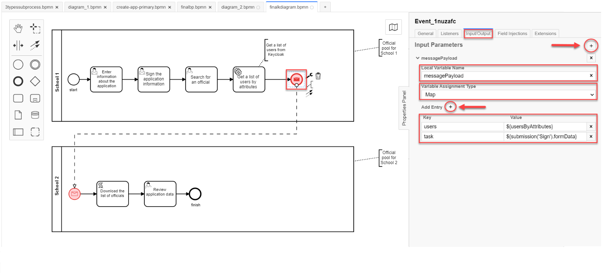
-
-
-
2.2. Створення пулу для бізнес-процесу другої школи
Змоделюйте пул для бізнес-процесу другої школи. Для цього виконайте кроки, подані нижче:
| Моделювання діаграми бізнес-процесу має відбуватися в рамках елемента Create Pool/Participant. |
-
Відкрийте додаток Camunda Modeler та створіть нову діаграму BPMN. Для цього у лівому верхньому куті натисніть меню File → New File → BPMN Diagram.
-
На панелі інструментів зліва знайдіть елемент Create pool/Participant та перетягніть його до панелі моделювання.
-
Заповніть наступні поля відповідними значеннями:
-
У полі
Participant Nameвведіть назву пулу, що відображатиметься у моделері —Школа 2. -
У полі
Process idвведіть ідентифікатор бізнес-процесу —secondversa. -
У полі
Process Nameвкажіть бізнес-назву процесу за необхідності.
-
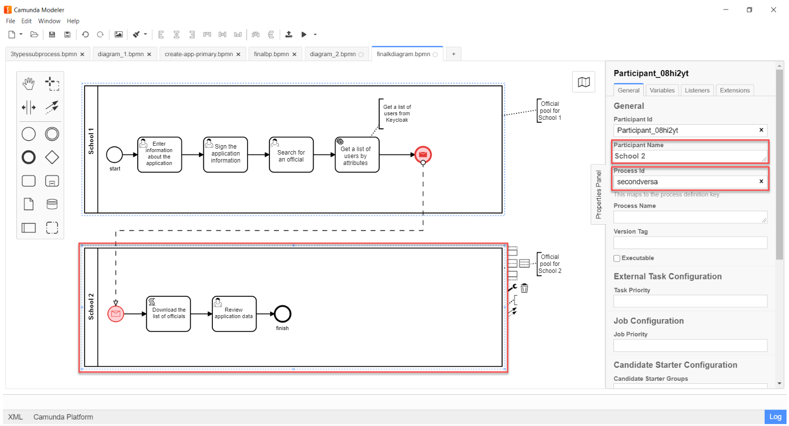
2.2.1. Моделювання стартової події повідомлення
На цьому етапі необхідно отримати список користувачів від бізнес-процесу першої школи. Для цього використовується початкова подія "Повідомлення".
-
Змоделюйте початкову подію повідомлення.
Детальніше про події "Повідомлення" — за посиланням. -
Перейдіть до панелі налаштувань справа та сконфігуруйте параметри:
-
У полі
Idвведіть ідентифікатор події —Two. -
У полі
Global Message Nameвведіть глобальне ім’я для встановлення зв’язку між подіями повідомлення —Startprocessmessage. -
У полі
Global Message referencedоберітьStartprocessmessage. Значення заповнюється автоматично, відповідно до параметраGlobal Message Name.Значення параметрів Global Message NameтаGlobal Message referencedмають збігатися з відповідними значеннями події, що надсилає повідомлення.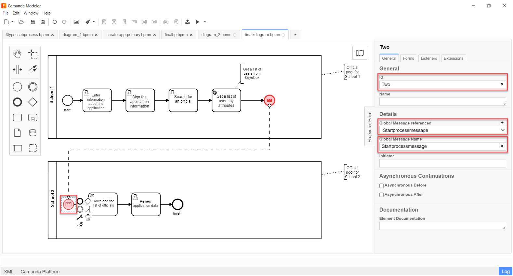
-
2.2.2. Моделювання задачі скриптування для завантаження списку посадових осіб
На цьому етапі необхідно на основі даних від бізнес-процесу першої школи створити скрипт, який конвертує список користувачів, отриманих із сервісу Keycloak, у рядок значень, розділених комою. Ці значення надалі можна буде використати для надання доступу до задачі із переведення учня у бізнес-процесі другої школи.
-
Створіть нову задачу, визначте її тип, натиснувши іконку ключа та обравши з меню пункт Script Task (Задача скриптування).
-
На панелі налаштувань справа заповніть наступні поля:
-
У полі
Nameвкажіть назву задачі —Завантажити список посадових осіб. -
У полі
Script Formatвкажіть формат скрипту —groovy. -
У полі
Script Typeвкажіть тип скрипту —Inline Script. -
У полі
Scriptвведіть безпосередньо groovy-скрипт:Example 1. Приклад. Groovy-скрипт, що конвертує об’єкт зі списком користувачів у рядок значень, розділених комамиdef users = message_payload('Two').data['users'] def usersstring = '' users.each { usersstring=usersstring+it+',' } set_variable('users',users)
-
-
Результат виконання скрипту записується до змінної
'users'.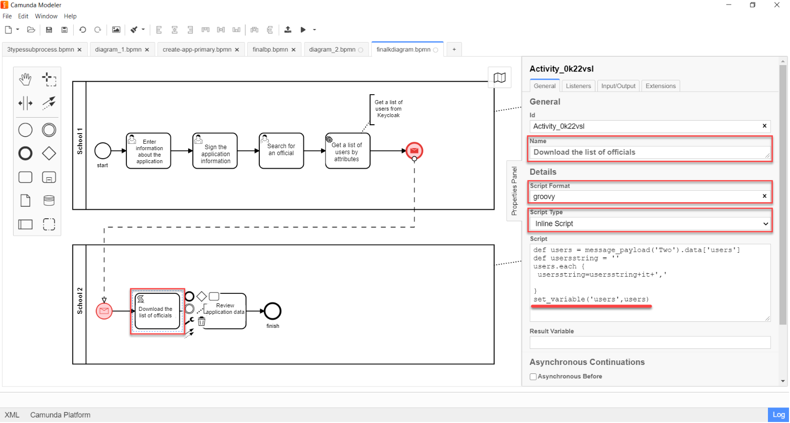
2.2.3. Моделювання користувацької задачі для перегляду даних про заяву
Змоделюйте користувацьку задачу (User form) для перегляду даних про заяву та пов’яжіть її з формою бізнес-процесу параметром Form key.
-
У полі
Nameвведіть назву задачі. Наприклад,Переглянути дані про заяву. -
У полі
Form keyвведіть ключ форми бізнес-процесу —add-zayavaview. -
У полі
Candidate usersвикористайте змінну, яка зберігає отриманий список користувачів із Keycloak у вигляді рядка значень, розділених комами —${users}.Список імен користувачів можна передати як напряму (наприклад,
username1, username2, username3, …), так і через змінну (тут —${users}), в якій цей список зберігається.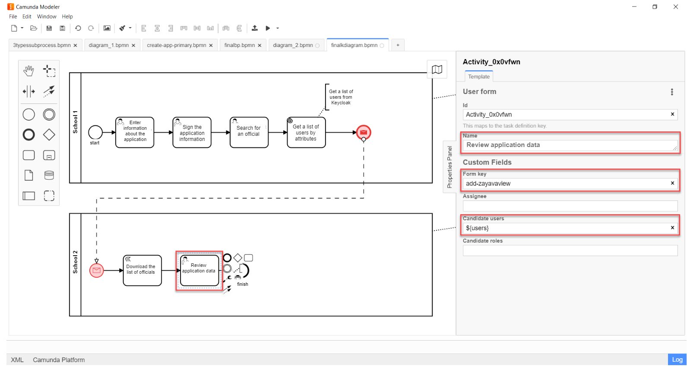
Таким чином кожна посадова особа відповідної організації (Школа 2) матиме доступ до перегляду цієї задачі в особистому Кабінеті, а також зможе призначити себе виконавцем.
| Посадова особа може НЕ мати доступу до бізнес-процесу, лише до конкретної задачі. Тобто такий користувач не зможе розпочати бізнес-процес, проте зможе виконати певну задачу в рамках такого процесу. |
2.2.4. Моделювання події завершення процесу
Змоделюйте подію завершення процесу:
-
У полі
Nameвведіть назву події —Завершення.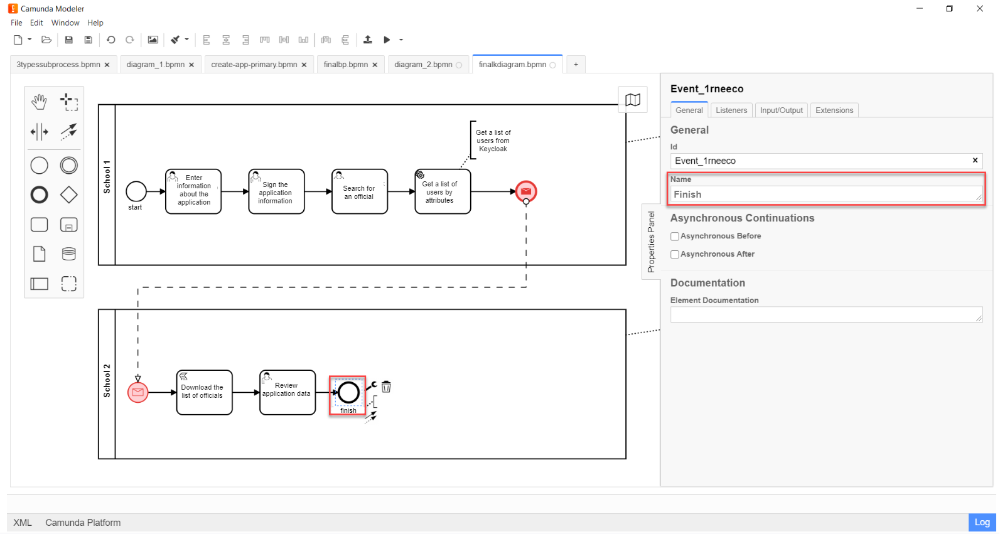
3. Налаштування доступу в Keycloak
Розглянемо, як саме виглядають користувачі та їх атрибути з погляду сервісу Keycloak.
Всі користувачі Платформи та реєстру, а також їх атрибути зберігаються у певних реалмах[1] Keycloak, відповідно до їхньої ролі.
Виділяють 4 основні реалми:
-
-admin -
-officer-portal -
-citizen-portal -
-external-system.
| Детальніше про створення користувачів та надання їм прав доступу — за посиланням. |
Список користувачів за атрибутами необхідно отримати із реалму -officer-portal, адже доступ до задачі надається користувачам із роллю "Посадова особа".
|
-
Увійдіть до реалму
-officer-portal.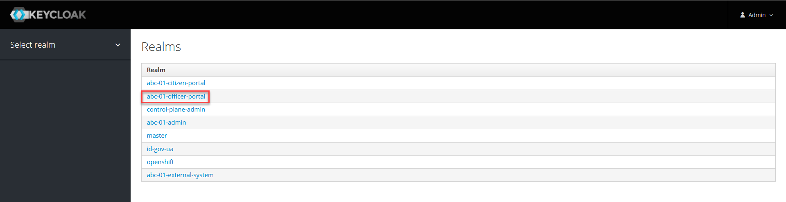
-
На боковій панелі зліва, перейдіть до розділу Users. Натисніть
View all usersдля відображення списку усіх користувачів в рамках цього реалму.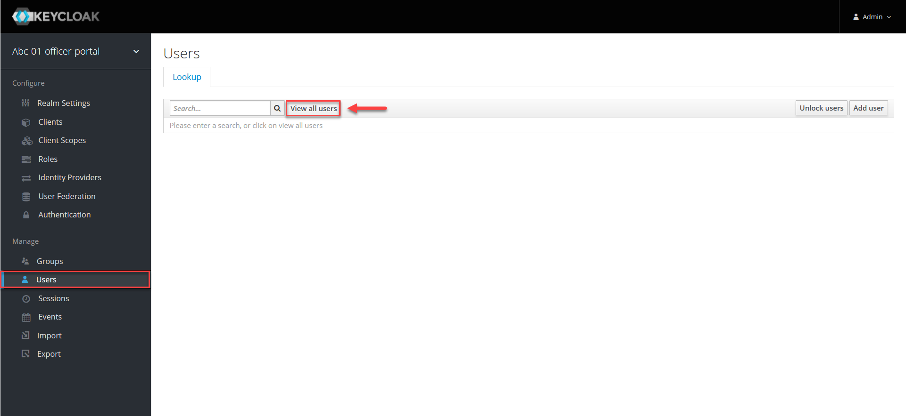
-
Перейдіть до налаштувань певного користувача. Для цього натисніть його ID.
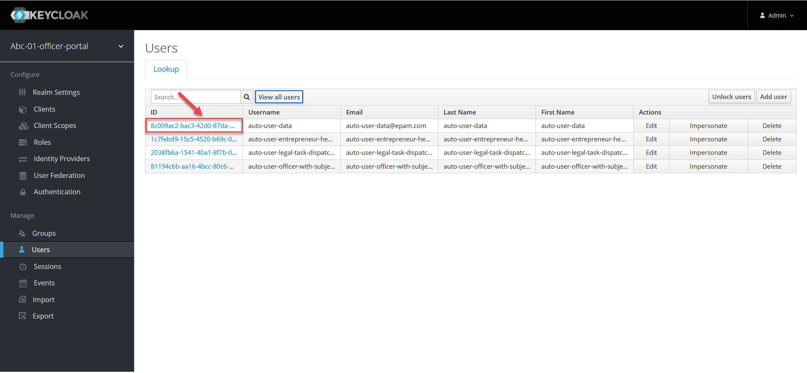
-
На вкладці Details зверніть увагу на ім’я користувача, що повертається у списку до бізнес-процесу. Воно відповідає параметру
Username. 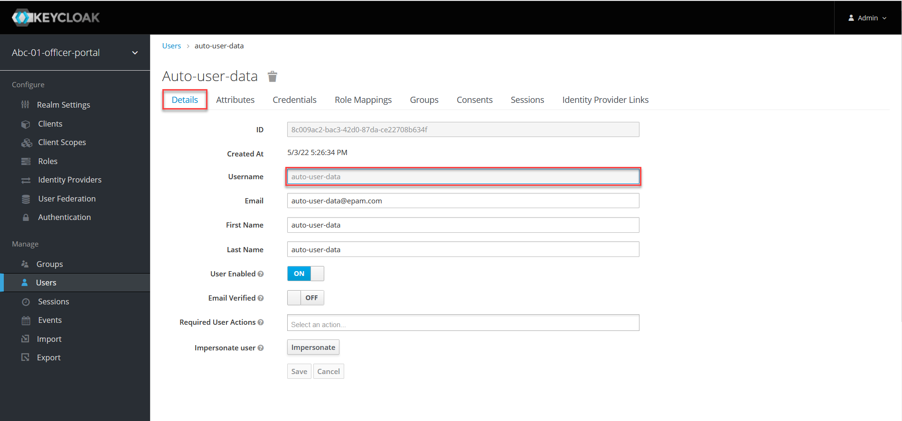 -
Відкрийте вкладку Attributes.
Атрибути користувачів визначаються як пари ключів та їх значень у полях
KeyтаValue.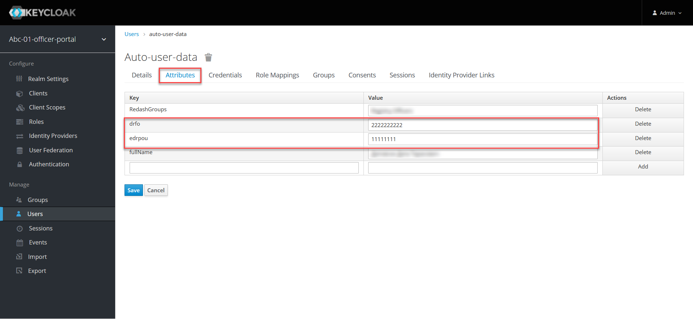
Таким чином, ми бачимо, що користувач з іменем auto-user-data має налаштовані атрибути edrpou та drfo. Параметри мають значення кодів ЄДРПОУ та ДРФО — 11111111 та 2222222222 відповідно. Атрибут edrpou визначає приналежність цього користувача до організації із кодом 11111111. Атрибут drfo визначає ідентифікаційний номер цього користувача.
У Keycloak немає чіткого розподілу на організації. Такий розподіл встановлюється атрибутом edrpou. Тобто якщо певна організація має код ЄДРПОУ 11111111, то кожна особа з атрибутом "edrpou":"11111111" належатиме до такої організації.
|
4. Імплементація на рівні API
Для функціонування делегата ${getUsersByAttributesFromKeycloak}, на рівні Java API розроблено додатковий ендпоінт для отримання списку користувачів із сервісу Keycloak за атрибутами edrpou та drfo.
- Ресурс:
-
POST /realms/{realm}/users/search-
POST— HTTP-метод. -
{realm}— реалм у Keycloak. Наприклад,-officer-portal. -
/users/search— ресурс/ендпоінт.
-
- Тіло запита:
-
{ "attributes":{ "edrpou":"edrpou", "drfo":"drfo" } }
API повертає об’єкт зі списком користувачів за вказаними атрибутами.
{
"id":"userId",
"username":"username",
"firstName":"firstName",
"lastName":"lastName"
...
}